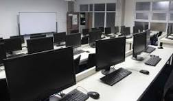
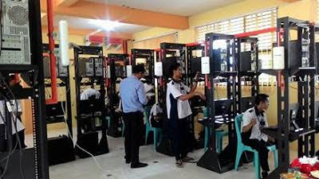
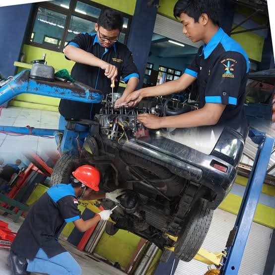
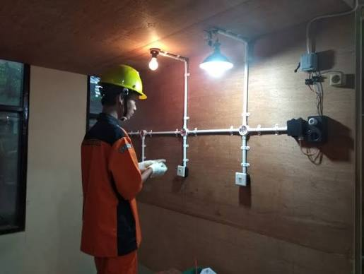

SMK Taruna Jaya Prawira
THE WINNER
|
|
SMK Taruna Jaya Prawira |
THE WINNER |
SMK Taruna Jaya Prawira adalah salah satu institusi pendidikan vokasi terkemuka yang berdedikasi untuk mencetak generasi muda yang kompeten dan siap kerja. Kami selalu mengedepankan kualitas pendidikan melalui kurikulum yang adaptif terhadap perkembangan industri dan teknologi. dengan tenaga pengajar yang berpengalaman dan fasilitas modern, kami berkomitmen untuk memberikan pengalaman belajar yang menyeluruh bagi setiap siswa.
Visi kami adalah menjadikan siswa menjadi profesional yang memiliki integritas tinggi dan kemampuan daya saing secara global. salah satu pencapaian terbesar kami adalah di akui sebagai Sekolah Pusat Keunggulan oleh kementrian pendidikan.
| No | Program Keahlian | Lama Belajar |
|---|---|---|
| 1 | Rekayasa Perangkat Lunak | 3 Tahun |
| 2 | Teknik Komputer & Jaringan | 3 Tahun |
| 3 | Teknik Kendaraan Ringan | 3 Tahun |
| 4 | Instalasi Tenaga Listrik | 3 Tahun |
| 5 | Teknik Permesinan | 3 Tahun |
| 6 | Teknik Las | 3 Tahun |
| Lap RPL
 |
Lap TKJ
 |
Bengkel TKR
 |
Bengkel TPM

|
Bengkel Las

|
Lap Instalasi Tenaga Listrik
 |